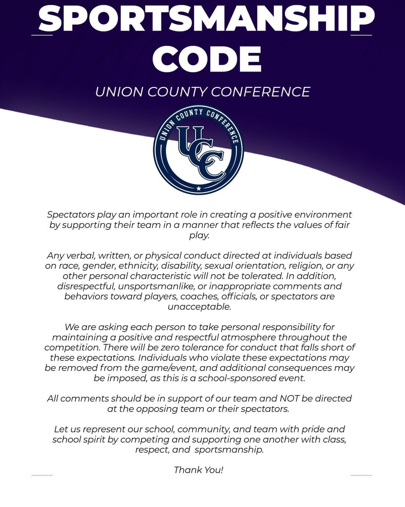

Spectators play an important role in creating a positive environment by supporting their team in a manner that reflects the values of fair play.
Any verbal, written, or physical conduct directed at individuals based on race, gender, ethnicity, disability, sexual orientation, religion, or any other personal characteristic will not be tolerated. In addition, disrespectful, unsportsmanlike, or inappropriate comments and behaviors toward players, coaches, officials, or spectators are unacceptable.
We are asking each person to take personal responsibility for maintaining a positive and respectful atmosphere throughout the competition. There will be zero tolerance for conduct that falls short of these expectations. Individuals who violate these expectations may be removed from the game or event, and additional consequences may be imposed, as this is a school-sponsored event.
All comments should be in support of our team and not be directed at the opposing team or their spectators.
Let us represent our school, community, and team with pride and school spirit by competing and supporting one another with class, respect, and sportsmanship.
Thank you.
Print it for your venue
The code as a single page, sized for a notice board, a gym entrance or a ticket table. Member schools are welcome to print and post it.
Download the poster{kind=link}
